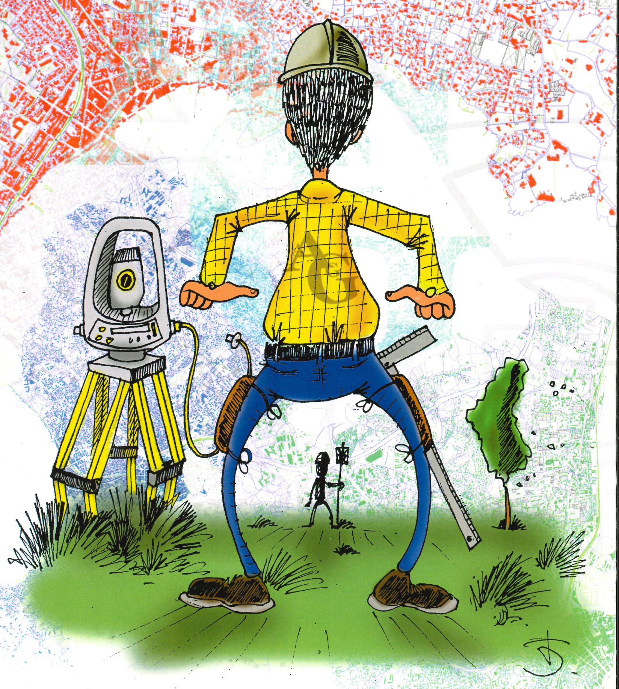

Nos Activités
Propriétaires actuels ou futurs, Professionnels et Élus locaux
:
Dès que vous devez Vendre,
Acheter, Construire,
Concevoir, Délimiter,
Partager, Évaluer,
Gérer le Sol ou la Propriété,
contactez :
Vincent Deleforges, votre géomètre-expert.
Il vous entendra, renseignera et conseillera au mieux de vos
intérêts dans votre projet en se conformant à votre liberté de
décision.
Pour Vous, il Lève,
Mesure, Implante,
Aménage, Délimite et
Expertise.
